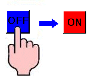
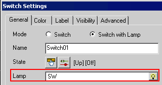
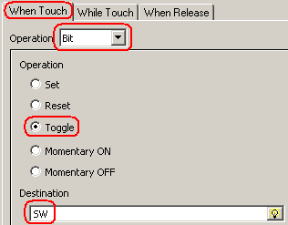
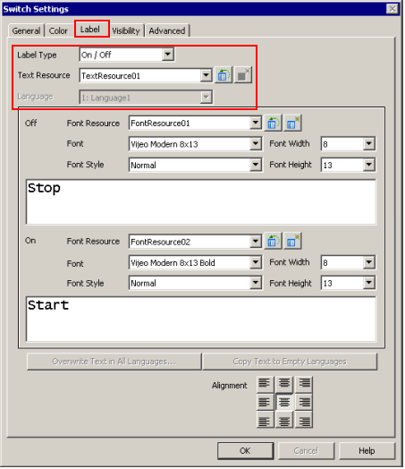
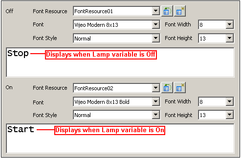

|
|
|
|
|
|
|
|
The example below describes the steps required to create a switch with the following behavior:
Toggles the BOOL variable SW ON/OFF. For more information on creating variables, see Chapter 6, Creating Variables.
Turns red when the BOOL variable SW is ON.
Turns blue when the BOOL variable SW is OFF.
Displays user-defined text for the ON/OFF states of the BOOL variable SW.

Click the Switch icon on the graphical objects toolbar, and select Switch.
On the panel, click and draw the area of the switch.
The Switch Settings dialog box opens.
In the General tab, select Switch with Lamp for the mode.
Select the BOOL variable SW for the Lamp variable. The Lamp variable controls the switch's ON/OFF status.

From the Style list, select the shape of the switch.
In the When Touch tab, select Bit as the Operation, select Toggle, and set the BOOL variable SW for the Destination variable.
This operation toggles the BOOL variable SW ON/OFF. The Lamp variable was set to the SW variable in step 4, so toggling the SW variable ON/OFF will change the switch's ON/OFF status.

In the Color tab, either:
Select a color resource from the Color Resource Library, or
Select Use Local Settings and then define the Color Settings for the Lamp variable's ON/OFF status. Set the ON Fore Color to red and the OFF Fore Color to blue.
Click the Label tab, select On/Off for the Label Type, select the text resource from the Text Resource Library or select Use Local Settings to keep the text the same, and specify the language for the label.

In the Off and On label areas, either select a font resource from the Font Resource Library, or select Use Local Settings and define your font specifications and enter in the text to display for the switch's ON/OFF status.

Set the text alignment.
Click OK to create the switch.

In addition to the Bit switch explained here, in the Switch Settings dialog box you can create different switches (such as Alarm and Word switches) with different operations (such as set bit, assign word, and change panel).